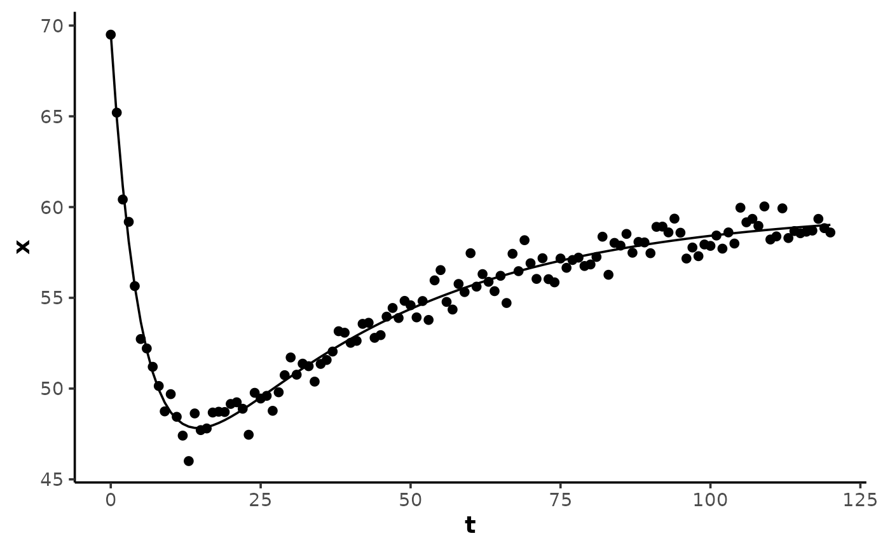

Calculate a two-phase curve: a fast monoexponential primary response
toward B and a slow monoexponential secondary response from B toward
a stable plateau at B2, both clocked from the response onset and summed.
Model family fit by analyse_kinetics() with method = "biexponential",
and by stats::nls() via the self-starting wrapper SSbiexponential().
Arguments
- t
A numeric vector of the predictor variable (time).
- A
A numeric parameter for the starting value of the response variable (the
t = 0intercept).- B
A numeric parameter for the asymptote of the fast component; the value the fast response alone would approach.
- tau
A numeric parameter for the fast time constant (\(\tau_1\)), in units of the predictor variable
t. Dominates the initial steep response.- B2
A numeric parameter for the asymptote of the slow component; the stable plateau the response recovers toward as
tapproaches infinity.- tau2
A numeric parameter for the slow time constant (\(\tau_2\)), in units of the predictor variable
t. Typicallytau2 >> tau.- TD
A numeric parameter for the time delay before the onset of the response, in units of the predictor variable
t. IfNULL(default), a 5-parameter model without time delay is used.
Details
Model equations
5-parameter:
A + (B - A) * (1 - exp(-t / tau)) + (B2 - B) * (1 - exp(-t / tau2))6-parameter, where
ts = pmax(t - TD, 0):A + (B - A) * (1 - exp(-ts / tau)) + (B2 - B) * (1 - exp(-ts / tau2))
A, B, and B2 are all values on the response scale. The fast
component is a monoexponential() response from A toward B with
amplitude B - A; the slow component runs concurrently from the same
onset with amplitude B2 - B. The curve starts at A, approaches B2 as
t grows, and is smooth throughout. If B = B2, the curve reduces to a
monoexponential() with time constant tau and asymptote B2.
Excursion point
The expected response is a fast excursion toward a minimum or maximum
short of B, followed by a slow recovery back to a stable plateau at
B2. The excursion point texc occurs where the two phase rates cancel:
texc = TD + log(ratio) / (1 / tau - 1 / tau2) with
ratio = -(B - A) * tau2 / ((B2 - B) * tau), which exists only when the
amplitudes oppose in sign and the fast phase dominates at the onset
(ratio > 1). If B is between A and B2, the response is monotonic
but still two-phase.
Examples
## create a biexponential excursion-recovery curve with random noise
set.seed(1)
t <- 0:120
x <- biexponential(t, A = 70, B = 40, tau = 5, B2 = 60, tau2 = 40) +
rnorm(length(t), 0, 0.8)
data <- data.frame(t, x)
## 5-parameter fit with the self-starting wrapper
model <- nls(
x ~ SSbiexponential(t, A, B, tau, B2, tau2),
data = data,
algorithm = "port",
lower = c(-Inf, -Inf, 0, -Inf, 0),
control = nls.control(warnOnly = TRUE)
)
summary(model)
#>
#> Formula: x ~ SSbiexponential(t, A, B, tau, B2, tau2)
#>
#> Parameters:
#> Estimate Std. Error t value Pr(>|t|)
#> A 69.5786 0.5490 126.73 <2e-16 ***
#> B 39.2594 1.1326 34.66 <2e-16 ***
#> tau 5.3301 0.3158 16.88 <2e-16 ***
#> B2 59.8830 0.3273 182.97 <2e-16 ***
#> tau2 37.8230 3.0486 12.41 <2e-16 ***
#> ---
#> Signif. codes: 0 ‘***’ 0.001 ‘**’ 0.01 ‘*’ 0.05 ‘.’ 0.1 ‘ ’ 1
#>
#> Residual standard error: 0.7114 on 116 degrees of freedom
#>
#> Algorithm "port", convergence message: relative convergence (4)
#>
y <- predict(model, data)
# \donttest{
if (requireNamespace("ggplot2", quietly = TRUE)) {
ggplot2::ggplot(data, ggplot2::aes(t, x)) +
theme_mnirs() +
ggplot2::geom_point() +
ggplot2::geom_line(ggplot2::aes(y = y))
}

# }